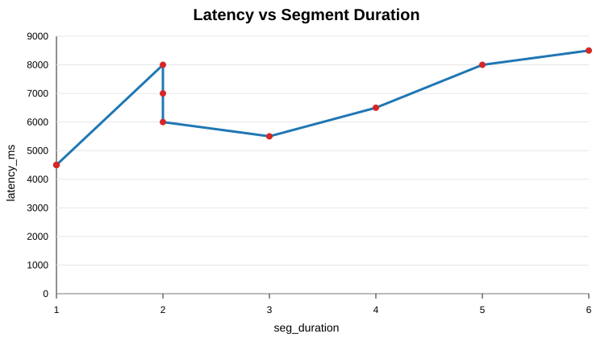
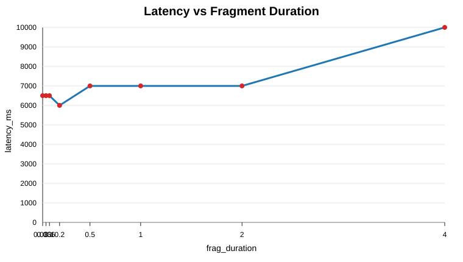

GitHub Repository: https://github.com/atakankaratass/cs418-project-3-low-latency
Student: Atakan Karatas
Course: CS 418
Project: Project 3 - Low Latency
Report status: Final report draft for submission. All latency numbers in this report come from real local measurements saved in docs/latency-measurements.csv.
In this project I implemented the low-latency DASH streaming workflow described in Low Latency.docx. I tried to stay inside the assignment scope and the linked tutorial. I did not add a different streaming stack or a different player. The final pipeline uses OBS as the live source, a source-built and modified FFmpeg binary for low-latency DASH packaging, NGINX and modified node-gpac-dash for HTTP chunked delivery, and dash.js for browser playback.
The main target was to get the glass-to-glass latency below 5 seconds. At first this was not easy. Some settings played smoothly but stayed around 6-8 seconds. Some other settings reduced latency but caused dash.js stalls. After testing the full pipeline, the successful validation profile was reduced OBS output resolution and bitrate with 1-second segments. The best measured result was about 4.5 seconds, which is below the required 5-second limit.
This report explains what I built, how I validated it, what problems I saw, and how the experiments behaved.
The implemented path is:
OBS -> RTMP -> modified FFmpeg -> LL-DASH chunks/segments -> NGINX -> modified node-gpac-dash -> dash.js browser playerOBS captures the source and burns the current wall-clock time into the video frame. FFmpeg listens for RTMP input from OBS and writes DASH output to local disk. NGINX serves the browser player and proxies /dash/ requests to node-gpac-dash. The modified node-gpac-dash server sends media segments using HTTP chunked transfer encoding, so the player can receive partial segment data before the whole segment is finished.
The browser player is generated in public/index.html. It uses dash.js and points to /dash/live.mpd. I kept the manifest path visible in the page because it helps during demo and debugging. It clearly shows that the player is loading the expected DASH manifest.
[INSERT SCREENSHOT: dash.js player page showing the video and manifest /dash/live.mpd]
The assignment required compiling FFmpeg from source, even if FFmpeg was already installed. The required source file was:
/Users/atakankaratas/ffmpeg_sources/ffmpeg/libavformat/dashenc.cThe tutorial explains that FFmpeg normally writes partial DASH media segments with a temporary .tmp extension and then renames them later. This causes a problem for node-gpac-dash because node-gpac-dash tries to read the live segment while FFmpeg is still writing it. To fix that, I changed the media segment temp path so FFmpeg writes directly to the final .m4s file name.
The original behavior was effectively:
snprintf(os->temp_path, sizeof(os->temp_path),
use_rename ? "%s.tmp" : "%s", os->full_path);The source in my build is:
snprintf(os->temp_path, sizeof(os->temp_path),
use_rename ? "%s" : "%s", os->full_path);This means the .tmp extension is removed, which matches the tutorial and Appendix A requirement.
I used the source-built binary at:
/Users/atakankaratas/bin/ffmpegRunning that binary shows the required Appendix A flags:
--enable-demuxer=dash --enable-libxml2The evidence file also shows that the DASH muxer supports the needed low-latency options, including -ldash, -streaming, -frag_duration, -frag_type, -use_template, -use_timeline, -utc_timing_url, and -window_size.
Evidence file: docs/report-assets/ffmpeg-build-evidence.md
[INSERT SCREENSHOT: terminal running /Users/atakankaratas/bin/ffmpeg and showing --enable-demuxer=dash --enable-libxml2]
The main FFmpeg command format followed the tutorial and the assignment. The important options were:
-f flv -listen 1 -i rtmp://127.0.0.1/live/stream for receiving OBS RTMP input.-ldash 1 for low-latency DASH mode.-streaming 1 so FFmpeg writes chunked fragmented output.-use_template 1 -use_timeline 0 because the tutorial uses SegmentTemplate without SegmentTimeline.-utc_timing_url 'https://time.akamai.com/?iso' so dash.js can synchronize time.-frag_type every_frame for the segment-duration experiment baseline.-frag_duration <value> -frag_type duration for the fragment-duration experiment.-window_size 2 -extra_window_size 2 in the final measured runs to keep the live window shorter.For OBS, I started with higher quality settings, but the latency was too high. The assignment says that if CPU or encoder load causes lag, we should reduce resolution or quality. I followed that direction. The final below-5-second validation profile used:
852x4801200 kbps301 second301 secondThis was the setup that produced about 4.5 seconds of latency without visible foreground playback stalls.
NGINX serves the player at:
http://127.0.0.1:8080/It proxies DASH requests to node-gpac-dash at port 8000. The NGINX config disables proxy buffering for /dash/, because buffering would work against low latency.
The local node-gpac-dash checkout was also modified. The original behavior did not work correctly with chunkCount=0, because it could end the response before media data was sent. I changed the local checkout so chunkCount=0 means disabled. I also added a short EOF timeout so video and audio responses can finish independently after FFmpeg stops appending to the current .m4s file.
This part was one of the harder parts of the project. At first the stream looked like it had no media data. The root cause was not the browser player. It was node-gpac-dash ending the response too early when chunkCount was 0. After fixing this, the media started flowing correctly. Later I also saw audio and video chunk counts did not always match, so a single global chunks-per-segment value was not reliable. The EOF timeout was more stable for our local setup.
The local node-gpac-dash patch notes are in:
docs/node-gpac-dash-local-patch.mdThe assignment required confirming that the browser receives chunks with chunked transfer encoding, not only complete segments. I verified this in the browser inspector Network tab. The saved screenshot shows Transfer-Encoding: chunked for media segment requests.
Evidence screenshot: docs/report-assets/browser-chunked-transfer.png
[INSERT SCREENSHOT: browser Network tab showing /dash/chunk-stream...m4s and Transfer-Encoding: chunked]
This was important because normal DASH playback can work with full segment downloads, but that would not prove the low-latency path. The chunked transfer evidence shows that node-gpac-dash was actually serving the media progressively.
Latency was measured by comparing the current clock time with the wall-clock time embedded in the video frame by OBS. I used this method because it is the method requested in the assignment. I also used an internet clock page during manual measurements, but the important value is the difference between the current time and the visible video timestamp.
The successful below-5-second validation result was:
| Setting | Value |
|---|---|
| OBS output | 852x480 |
| OBS bitrate | 1200 kbps |
| FPS | 30 |
| Keyframe interval | 1 second |
| FFmpeg keyint | 30 |
| Segment duration | 1 second |
| Measured latency | about 4500 ms |
| Playback | no visible stalls |
This result is saved in docs/latency-measurements.csv and appears in docs/latency-results.md.
[INSERT SCREENSHOT: player and clock showing about 4.5 seconds latency]
I also noticed that changing tabs or moving away from the player could cause playback waiting events. When the player tab stayed foreground, the low-resolution 1-second segment run stayed stable for 1-2 minutes. When I switched tabs, Chrome/dash.js sometimes stalled and then used live catchup to return near the live edge. For this reason, the final measurements were done with the player foreground.
For this experiment I used the assignment matrix at 30 fps:
| keyint | seg_duration | latency_ms | notes |
|---|---|---|---|
| 30 | 1 | 4500 | low resolution OBS output 852x480 bicubic, bitrate 1200 kbps, keyframe interval 1s; foreground playback no visible stalls; below 5s target |
| 60 | 2 | 6000 | stable uninterrupted playback with dash.js liveDelay=2 and DASH window_size=2; still above 5s target |
| 90 | 3 | 5500 | foreground playback stable with no stalls; above 5s target |
| 120 | 4 | 6500 | foreground playback stable with no stalls; above 5s target |
| 150 | 5 | 8000 | above 5s target; user reported about 8s latency |
| 180 | 6 | 8500 | foreground playback stable with no stalls; above 5s target |
The results show that smaller segment duration helped latency. The seg_duration=1 run was the only one clearly below 5 seconds in our local environment. As segment duration increased, latency also generally increased. This makes sense because the player and DASH live window have more segment-level delay to work with. Larger segments were usually stable, but they did not meet the required low latency target.

For this experiment I fixed:
keyint=120seg_duration=44 seconds852x480, 1200 kbpsThen I changed frag_duration with -frag_type duration.
| keyint | seg_duration | frag_duration | latency_ms | notes |
|---|---|---|---|---|
| 120 | 4 | 0.033 | 6500 | foreground playback stable with no stalls; above 5s target |
| 120 | 4 | 0.066 | 6500 | foreground playback stable with no stalls; above 5s target |
| 120 | 4 | 0.1 | 6500 | foreground playback stable with no stalls; above 5s target |
| 120 | 4 | 0.2 | 6000 | foreground playback stable with no stalls; above 5s target |
| 120 | 4 | 0.5 | 7000 | foreground playback stable with no stalls; above 5s target |
| 120 | 4 | 1 | 7000 | repeated PLAYBACK_WAITING roughly every 4s; playback not stable |
| 120 | 4 | 2 | 7000 | repeated PLAYBACK_WAITING and GapController jumps; playback not stable |
| 120 | 4 | 4 | 10000 | repeated audio BUFFER_EMPTY/PLAYBACK_WAITING and GapController jumps; playback not stable |
The fragment-duration experiment did not produce a better result than the 1-second segment validation profile. With fixed 4-second segments, the measured latency stayed around 6-7 seconds for the smaller fragment values. Larger fragment values caused more visible playback waiting and audio buffer problems. In particular, frag_duration=1, 2, and 4 showed repeated dash.js PLAYBACK_WAITING and GapController jumps.
This was another difficult part of the project. At first I expected smaller fragments to always reduce the latency a lot. In practice, the full setup also depended on OBS ingest delay, DASH live delay, segment duration, audio/video alignment, and browser behavior. The fragment size alone did not solve the latency problem when seg_duration stayed at 4 seconds.

The repository uses automated checks to make the project easier to validate and less error-prone. I used TypeScript scripts to generate experiment matrices, FFmpeg command checklists, latency reports, live validation status, and QR overlay files.
The automated validation command is:
make validate-prThis runs linting, type checking, tests, build, environment validation, assignment source checks, experiment matrix generation, and latency report generation.
GitHub Actions is also configured for project checks. The repository uses ESLint, TypeScript typecheck, Vitest tests, Prettier, Husky, and lint-staged. This helped catch mistakes in generated files and scripts. For example, during the report work I found that the latency CSV was initially recorded with the wrong CLI format. I fixed the parser and added tests so manual latency rows can include an explicit latency_ms value when the observed timestamps are not ISO timestamps.
I also used OpenCode and Antigravity during development to automate repetitive checks, run tests, generate scripts, and keep the repo organized. These tools were used as development assistance, not as a replacement for live validation. The actual screenshots, latency measurements, and browser inspector evidence came from real local runs.
I implemented an optional QR timestamp overlay page:
public/qr-overlay.htmlIt generates a QR payload in this format:
cs418-project3-ts=<ISO timestamp>This can be added to OBS as a Browser Source. The helper code and tests for QR timestamp formatting and latency subtraction are included. However, I did not complete a real QR decode measurement from the received video frame. Because of that, I am not using QR latency as the required validation result. The required validation result in this report is still the wall-clock overlay measurement.
The biggest difficulty was that every part of the pipeline could add latency or cause stalls. At the beginning, the stream did not send media correctly because node-gpac-dash ended segment responses too early when chunkCount=0. After that was fixed, another issue appeared around segment boundaries. dash.js showed PLAYBACK_WAITING, and the logs showed GapController jumping around 0.1s. This happened more with some 4-second segment and fragment configurations.
Another difficulty was measuring latency honestly. It was tempting to only keep the best-looking run, but the assignment asks for experiments. I recorded the higher latency values too, including runs that were stable but above 5 seconds and runs that had stalls. This made the final results more useful because they show the real trend: the 1-second segment low-resolution profile was the only profile that clearly passed the 5-second requirement in this local environment.
The FFmpeg source modification also had to be checked carefully. It was not enough to use Homebrew FFmpeg or a random system FFmpeg. I verified the source-built binary, the configure flags, and the actual dashenc.c patch.
The final implementation follows the assignment pipeline and the linked tutorial. I used OBS, RTMP, modified source-built FFmpeg, LL-DASH packaging, NGINX, modified node-gpac-dash, and dash.js. I verified browser chunked transfer encoding and measured latency using the wall-clock timestamp in the video.
The final passing profile was the low-resolution seg_duration=1, keyint=30 run, with about 4.5 seconds latency and no visible foreground playback stalls. The segment-duration experiment showed that larger segment durations generally increased latency. The fragment-duration experiment showed that changing fragment duration alone did not beat the 1-second segment profile, and larger fragment durations caused repeated playback waiting.
Overall, the project reached the required below-5-second latency, but it also showed that low-latency streaming is sensitive to encoder settings, segment duration, player live delay, server behavior, and browser playback state.
1. Low Latency.docx, CS 418 Project 3 assignment document.
2. Bo Zhang, "Low-latency dash streaming using open-source tools," Medium, https://bozhang-26963.medium.com/low-latency-dash-streaming-using-open-source-tools-f93142ece69d.
3. FFmpeg Formats Documentation, https://ffmpeg.org/ffmpeg-formats.html.
4. OBS Studio, https://obsproject.com.
5. FFmpeg Compilation Guide for Ubuntu, https://trac.ffmpeg.org/wiki/CompilationGuide/Ubuntu.
6. DASH Industry Forum Low Latency DASH change request, linked from the Medium tutorial.